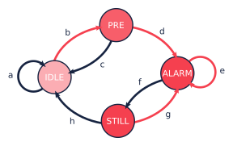
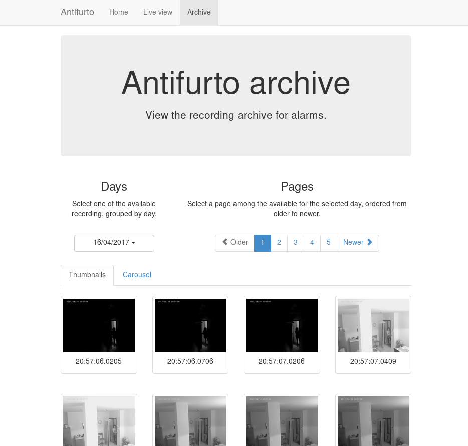

Antifurto: home-made security camera
1 Introduction
In February 2014 I had a very unpleasant surprise after coming back home from a weekend in Berlin. Me and my girlfriend found out our apartment upside down because of burglars. We suffered the loss not only of many of our belongings, but worse, of our safety. We didn't feel safe in our home and we didn't feel safe to leave it - not even for half an hour - for the fear to come back and find somebody inside. It was with this mood that I started this project: totally motivated to do something about it.
My goal was to install in the apartment a security alarm that was cheap, safe and easy to use: something that I could trust. Nowadays there are plenty of alternatives that satisfy all the requirements, but at that moment I couldn't find anything like that. As I am a software engineer, I decided to jump into the project and spend most of my free time on it (my girlfriend was only partially happy with this resolution).
The end result was a Raspberry Pi with a camera module and a bunch of software, in part taken from the open-source and in part written by me. As of the time of writing, it's been running in production (namely my apartment) untouched for more than three years now. Ironically my security camera lasted way more than my apartment, because since then I already moved twice. So, quite a success for me.
And, if you're asking yourself if I had any burglars again since then, the answer is no, luckily. But I had the opportunity to test it multiple times when my parents have intruded my apartment without permission…

1.1 Why?
At this point you can probably see my motivation behind the project, and also the target audience: I needed something cheap that I, and my girlfriend could use. This set of users was important for the design. It meant that the normal usage should be simple, because my girlfriend (who is not a developer) had to use it. The configuration and maintenance was however on me, so I didn't focus on make that simple.
Today I'm open-sourcing the project. You can find it on GitHub under mbrt/antifurto. The name comes from an Italian word that means "security alarm". It was a codename at the beginning, waiting to be changed in something better, but in the end I didn't bother. So antifurto is still the name today.
Why am I open-sourcing that now, and not before? Why not keeping it closed source? The project started to meet my needs, so I had no reason at the beginning to open source something that was completely tied to my use case. Nobody would have gotten any particular benefit from it. After some time however it grown up into a more featured product. So, since at the time I wasn't happy with my job, I considered starting a business and commercialize it. Long story short, getting funds for startups in Italy is quite hard, so I needed money from myself or my family. I then had to improve many parts of the project because I needed to scale out for multiple customers. It was not only about my apartment anymore. In the meantime competitors started to jump out from nowhere before I even got started. I had an opportunity for a new job, so my motivations kinda vaporized.
At the end of the day, there is not a commercial product, but a working prototype, and an interesting experience to share. I decided to open-source it now, because I needed time to put together this writeup and cleanup some documentation. All things that I find boring, so it took me a while.
1.2 What?
In this writeup I'm going to present the interesting bits of the project. I will try to not focus too much on the details, but rather to present clearly the high-level architecture, some design decisions and some interesting implementation bits.
1.3 Features
The antifurto project is essentially a security camera that allows to monitor what happens through the lenses of a single camera. When the camera detects motion above a certain threshold, it sends notifications through WhatsApp and emails and starts to record pictures. These are in turn saved to the local disk and uploaded to a Dropbox folder. There is also a web portal (optimized for desktop and mobile browsers) from which you can start and stop the monitoring, a live view from which you can see images in real time and an archive page for the past recordings. It's not possible to combine multiple cameras together: single camera, single website.
2 Architecture
The project architecture is simple. Everything lives inside a Raspberry Pi, period. There isn't a server component communicating with the camera, or anything else. This is not an ideal architecture from the security point of view, because all the keys, including SSL, Dropbox API secrets, email passwords, etc are inside that box. It was the perfect solution for me, because instead of a device and a server to manage, I had only one device. Moreover, the development time was reduced because the architecture was simpler.
This unfortunately cannot work out if you want to provide the project to your mother (assuming she's not a software developer). The Raspberry needs a non-zero amount of maintenance, to provide a minimum amount of security. This includes for example installing OS updates and rebooting the device periodically. The keys need to be safe guarded inside the Raspberry itself, and re-generated in case of leak. Again, this is not good if you want to do it properly, but I preferred to do something quick and get it working as fast as I could.
Now for the details. The project is divided into three main parts:
- the main
antifurtoexecutable (written in C++), which is responsible for the monitoring and notifications; - a web server (Apache + PHP), that serves the website from which you can see the live stream, turn the monitoring on and off and view the archive;
- a FastCGI component that serves as a bridge between the webserver and the main executable.
There are also other small satellite components and scripts, such as:
- a bash script to send emails with the
mailcommand; - python scripts to send WhatsApp notifications and upload pictures to Dropbox.
You can see below a diagram of the high level architecture:
As you can see, the pictures come from the camera module and are processed by
the antifurto main executable. This decides whether to store the pictures on
the local hard drive (an SD card), and upload them on Dropbox or not. It also
decides, when to send notifications via email or WhatsApp messages. Whenever the
user decides to start a live view from the web interface, or start/stop the
monitoring, the backend sends a POSIX signal to the main process. If the desired
action was to start the live view, the main executable will start to send the
pictures over the zmq channel to the antifurto.fcgi component. Its only task
is to forward them to the webserver via an FCGI socket.
The design is heavily based on observers, type erasure, composite reuse principle and SOLID principles, to minimize dependencies among components. Well, at least I tried to keep those in mind.

In the diagram you can see the architecture of the main executable. Each box represents a class. I didn't represent all of them, but only the most important. For example I left out the utility classes like schedulers, queues, observer lists. The dark boxes represent controller classes, which are responsible for managing specific parts of the application. Controller classes manage all the boxes connected via a "tilted square" arrow. This means that they both own those classes (so they are responsible for their lifetime) and they know how to operate them. Red boxes don't manage anything, but they provide a functionality either for other classes or talk to external services.
One important thing to notice is that each class is owned by one and only one controller. The architecture and the lifetime of the resources are very simple and clear in this way. A consequence is that classes can be tested individually much more easily, since there are no cyclical dependencies, and children don't know anything about their parents.
In the diagram you can also see what are the inputs and outputs of each class.
Red arrows are inputs, and dark arrows are outputs. You can see that I didn't
connect explicitly those arrows. Why? Because they are loose connections.
Outputs are provided in the form of observers1, and classes interested in
pictures don't know anything about the Camera class. So, controllers are
responsible to "wire" those connections, by registering themselves to the inputs
they need and forward them to the classes they manage. For example the
RecordingController class register itself to both alarm notifications (provided
by the MotionDetector) and the picture stream (provided by the Camera). It is
managed by the MonitorController, so whenever the monitoring functionality is
stopped, the recording classes can be safely deleted. The RecordingController
then listens to alarm events and whenever one occurs, it forwards the pictures
stream directly to the PictureArchive and the DropboxUploader.
3 Main executable
In this long section I'm going to talk about the internal details of the main
executable, called antifurto for a very lack of fantasy.
3.1 Main class
The main class is called Antifurto, what a surprise! It is responsible to
start and stop the monitoring and the live view, by orchestrating the resources
involved. It uses a Config structure for the configuration, that comes from
the command line and the configuration file. It can be used as an external
library, as most of the components in this project, since it is self contained.
It contains all the controllers, that are described in the Main controllers section, and the implementation details are hidden from the header file behind a Pimpl.
The interface is very simple: it takes a configuration and the user can control when to start and stop monitoring and live view from four public methods:
class Antifurto { public: Antifurto(const Configuration& c, bool maintenanceNeeded = true); void startMonitoring(); void stopMonitoring(); void startLiveView(); void stopLiveView(); private: meta::ErasedUniquePtr<AntifurtoImpl> pimpl_; };
So, this class is all about the very high level use cases of configuring, starting and stopping the main functionalities.2
These functions are a bit less simple than one can at first imagine. For example
the startMonitoring is anynchronous and starts the monitoring only after a
configurable timeout. This is because after the start, the person may need to
get out the way before the monitoring effectively starts. The default I'm using
for myself is one minute. At the same time, the function needs to check if the
user cancels the start request before the timer goes off. I needed to put some
attention in the interaction between start, stop and the destructor. The
CameraController lifetime depends on whether one between the monitoring and the
live view functionalities are on:
void handleCameraControllerNeed() { if ((liveViewActive_ || monitorActive_) && !camera_) camera_.reset(new CameraController()); else if (!liveViewActive_ && !monitorActive_) camera_.reset(); }
This method is called by all the four external methods, to factor out this common part.
3.2 Main controllers
In this section I'm going to describe the three controllers that manage the monitoring, live view and the camera sub-components.
3.2.1 MonitorController
This class controls the monitoring functionality life cycle. It delegates to its
sub-components tasks such as motion detection, and notifications. The most
important part of its public interface is the examinePicture function:
void examinePicture(const Picture& picture);
The Main class calls this function whenever a new picture comes out of the camera.
Another interesting bit is the way this class asks for the upper level
controller to change the picture capture interval, or to stop the recording
altogether. To break cyclical dependencies, the upper level class has to
instantiate the MonitorController by passing a couple of callbacks. One of
them is the SetPicturesInterval:
using SetPicturesInterval = std::function<void(std::chrono::milliseconds)>;
that is used whenever some motion is detected. In that case, the
MonitorController asks for an increase of the capture frequency. It's also
useful whenever nothing is going on, to decrease the capture frequency and so
save energy:
void MonitorController::onAlarmStateChanged(MotionDetector::State state) { using State = MotionDetector::State; switch (state) { case State::NO_ALARM: setPicturesInterval_(config::monitorCycleDuration()); break; case State::PRE_ALARM: setPicturesInterval_(config::monitorCycleDurationOnAlarm()); break; default: break; } log::info() << "Alarm state: " << state; }
3.2.2 CameraController
This class is responsible to take pictures from a camera at a given rate. A user of this class can register an observer and specify the rate at which the pictures have to be taken:
class CameraController { public: using Subject = meta::Subject<const Picture&>; using Observer = Subject::Observer; using Registration = Subject::Registration; using Period = std::chrono::milliseconds; /// Set the pictures capture rate void setDesiredPeriod(Registration const& r, Period period); /// Add an observer to the pictures flow Registration addObserver(Observer observer, Period desiredPeriod); // ... };
This uses the observer pattern, implemented as an utility in the meta namespace.
Every time a picture is taken, the observer callback is called. If multiple observers are interested in different capture rates, the maximum rate is used. This means that an observer specifies the minimum speed, but it could get pictures at a higher speed, if it's necessary for other observers.
To implement this functionality, in a separate thread a Metronome class sleeps
the required time, and then the Camera class takes a picture. Every time an
observer is registered or de-registered, the sleep time is updated.
3.2.3 LiveViewController
This class starts and stops the live view functionality. It doesn't implement the functionality itself; it just controls the lifetime of a LiveView object. From the outside it takes pictures and the start and stop commands.
Whenever a picture comes, it is forwarded to the internal LiveView object. To
detect when the user is not interested in the live view anymore, there is a
primitive control flow, which is basically a fixed queue of pictures sent to the
browser. When the client doesn't request them, the queue fills up. After a
certain timeout with a full queue, the LiveViewController simply stops the
live view:
if (liveView_->addPicture(p)) lastPictureWrittenTime_ = system_clock::now(); else if (system_clock::now() - lastPictureWrittenTime_ > timeout_) stop();
To do this, the internal LiveView object simply informs whether it has been
able to process the image or not, and if not, the timeout is checked.
The stop function invokes a callback, that asks to be de-registered from the
stream of pictures.
3.3 Picture's capture
3.3.1 MotionDetector
This class uses the OpenCV library to examine the pictures flow and determine if something is moving. It implements the observer pattern to notify the observers for the current state. The motion detection code is pretty simple:
cv::absdiff(curr_, p, currDiff_); cv::bitwise_and(prevDiff_, currDiff_, motion_); if (motionHappened()) onMotionDetected(); else onNoMotion(); // save std::swap(prevDiff_, currDiff_); curr_ = p;
The code works with three pictures: the current one and the last two. Two images
are computed out of them by making a difference (i.e. subtracting the gray
values of the pixels one by one) between the first with the second and the
second with the third. Then a "bitwise and" is computed between them. Random
noise will be filtered out, since it's unlikely to stay still for three frames,
and the image will be almost completely black. Whenever something moves however,
certain areas of the pictures will differ among the three frames, and so the
difference will produce white pixels. These pixels are then counted in
motionHappened(), and if they exceed a certain threshold, then motion is
detected.
There is an additional layer of protection against errors, and it's a state machine that counts how many consecutive moving frames have been detected. These states are used to better control energy saving, picture capture and alarm notifications.

Every time a transition occurs in this state machine, all the observers are notified. It will be up to them to take the right action.
Everything starts from the IDLE state. Whenever some motion is detected, the
state becomes PRE_ALARM. If no more motion frames are detected, the state goes
back to IDLE. If the motion continues however, the state machine transitions
to ALARM. It stays there while the motion continues. When it stops, the state
goes to the STILL state. This means that even though nothing is moving, for
some time, the alert level is still on alarm. Indeed, if some motion happens
again, the state turns immediately to ALARM again. If instead nothing happens
for some time, the state goes back to IDLE.
In this way we have decoupled the abstract states in which the system may be with the actions the various components have to take to respond.
3.3.2 Camera
The camera type is statically determined in StaticConfig.hpp. In the
Raspberry-Pi case, there is a homegrown version implemented by PiCamera that
uses a slightly modified version of the picam library, that I found here. This
library is a simple interface on top of the Raspberry userland library I forked
just to ease the build. To capture images outside the Raspberry world I instead
opted for the OpenCV library and implemented CvCamera. Now, I have to admit
that the CvCaptureRAII class might look a bit weird, but it was an attempt to
implement the camera resource through RAII. I took inspiration from Martinho
Fernandez rule of zero blog post and the concern about the rule of zero by Scott
Meyers. To discuss this in detail I would need an entire blog post in itself, so
I'll just point you to these valuable resources. To be honest I'm not very
satisfied by its look and feel now.
With the same spirit I implemented the capture resource for PiCamera, which is
just a one liner:
std::unique_ptr<CCamera, void(*)(CCamera*)> capture_;
It uses the non-so-well-known custom deleter feature of std::unique_ptr.
Again, look at the Fernandez's post for an explanation on why I didn't just
implemented a stupid destructor for PiCamera. Everything is handled
automatically, since in the constructor I pass the resource, and the deleter
function to be called in destruction (namely picam_stop_camera):
PiCamera::PiCamera(int width, int height) : width_(width), height_(height) , capture_(::picam_start_camera(width, height, 10, 1, false), &::picam_stop_camera) { // ... }
These two different implementations of the camera resource were not intended to
be used at the same time: one was only for the Raspberry Pi hardware, and the
other for PC's with USB cameras. For this reason I didn't introduce any common
interface, and just used a compile time define and a typedef to switch between
them:
namespace antifurto { namespace config { #if defined(ANTIFURTO_RASPBERRY) using Camera = antifurto::PiCamera; #else using Camera = antifurto::CvCamera; #endif }}
The code will simply refer to the antifurto::config::Camera type to get a
capture resource. I just needed to make sure their public interface (i.e. the
public methods) are the same, so the two classes could be used interchangeably.
This trick is quite handy if you don't need runtime polymorphism, but honestly it's a bit overkill for this project.
3.4 LiveView
This class is managed by the LiveViewController and is responsible to forward pictures to a ZeroMQ socket. It has a single producer / single consumer queue (see the concurrency section) and a worker thread to offload the communication.
The interesting part about this class is the use of a non-blocking lock-free queue, that allows minimum interruption for the producer. Whenever the queue is full, the images are discarded, and the caller is notified, in order to make some control flow, without interrupting the images flow.
For the communication to the webserver we use the request-reply pattern in ZeroMQ. It's a simple protocol where at very request corresponds one reply. Reconnections are implemented in the FastCGI backend, with the ZmqLazyPirateClient class.
3.5 Picture recording
3.5.1 RecordingController
This class is responsible for managing the registration of the pictures while an
alarm is active. It accepts pictures with the void addPicture(Picture p)
method and registers itself to the MotionDetector to know when to start and stop
the recording. This is done by saving Jpeg pictures on the local file system (by
using PictureArchive) and uploading them to Dropbox (by using DropboxUploader).
The state machine is quite simple:
void RecordingController::onAlarmStateChanged(MotionDetector::State state) { using State = MotionDetector::State; switch (state) { case State::NO_MOTION: archive_.stopSaving(); break; case State::NO_ALARM: enqueueOlderPictures(); break; case State::ALARM: archive_.startSaving(); break; case State::PRE_ALARM: default: break; } }
Whenever the motion detector notifies this class about an alarm, it starts to save the pictures. When there is no motion involved (even if the alarm is still active), the recording is stopped.
Saving pictures in real time is important, both on disk and online. If there is a slow upload for any reason, the queue between the producer (the Camera) and the consumer (the uploader), grows. This would mean that by looking at the pictures online, the delay between capture and upload will grow more and more over time during alarms. To avoid this behavior, the queue size is limited, and whenever it's full, the coming pictures are queued in a secondary one:
void RecordingController::onPictureSaved(const std::string& fileName) { if (!uploadWorker_.enqueue(fileName)) { log::info() << "Failed to upload picture to Dropbox: queue is full"; std::unique_lock<std::mutex> lock(toUploadAfterQueueMutex_); toUploadAfterQueue_.emplace(fileName); } }
This ensures a fixed maximum delay between capture and upload, just by skipping
pictures now and then, when the queue is full. All the missing pictures are
instead uploaded when the alarm is not active anymore (the case
State::NO_ALARM: above):
while (!toUploadAfterQueue_.empty()) { if (uploadWorker_.enqueue(toUploadAfterQueue_.front())) toUploadAfterQueue_.pop(); else break; } // if the queue is not empty, we need to schedule another upload cycle if (!toUploadAfterQueue_.empty()) { log::info() << "Cannot empty the upload queue. Schedule a new upload"; scheduler_.scheduleAfter(std::chrono::minutes(10), [this] { enqueueOlderPictures(); }); }
The logic is a bit brutal but it works. While there is still something to upload, it adds the pictures to the upload queue. If the queue gets full again, a new procedure is scheduled after 10 minutes.
There is another maintenance procedure, to avoid a full hard drive. Every 24 hours, older pictures are removed. Depending on the configuration, only a certain amount of days are kept:
// schedule maintenance at every midnight using namespace std::chrono; auto maintenanceWork = [this] { performMaintenance(); }; scheduler_.scheduleAt(concurrency::tomorrow() + minutes(1), [=] { performMaintenance(); scheduler_.scheduleEvery(hours(24), maintenanceWork); });
3.5.2 PictureArchive
This class saves pictures in Jpeg format to a given folder. It takes a stream of
pictures and two commands: startSaving and stopSaving. When the recording is
started, not only the next picture is saved, but also some of the previous. This
object has indeed a fixed sized circular buffer that allows to retroactively
save the images right before an alarm popped up. It also allows observers to
register for when a picture is saved to disk, getting the file name.
void PictureArchive::save(Picture& p, Clock t) { std::string filename{ fs::concatPaths(currentFolder_, text::toString(t, text::ToStringFormat::FULL, '-', '_') + ".jpg")}; cv::putText(p, text::toString(t, text::ToStringFormat::SHORT, '/', ' '), cv::Point(30,30), CV_FONT_HERSHEY_COMPLEX_SMALL, 0.8, cv::Scalar(200,200,250), 1, CV_AA); cv::imwrite(filename, p, {CV_IMWRITE_JPEG_QUALITY, 90}); notifyObservers(filename); }
The picture gets a timestamp text overlay on the top left corner and then is saved on disk.
On the bad side there is the ring buffer, which is actually not a ring buffer at all. Pictures are pushed to the end of a vector. The beginning is then deleted by moving all the other elements at the previous index. Not pretty, not fast, but all in all it works. Moving to a proper circular buffer should not be very hard.
3.5.3 DropboxUploader
This class is responsible for uploading files to a Dropbox account, by using an
external dropbox_uploader.sh script. It just generates a configure file for
it, starting from the Antifurto's configuration, and uploads a file when
requested, by launching an external process. Nothing fancy here, I just forked
andreafabrizi/Dropbox-Uploader.
3.6 Notifications
Two types of notifications are supported: WhatsApp and emails. WhatsApp have
been historically fighting against bots. For this reason the phone numbers I
used as source for notifications have been banned. I don't recommend using it
for this reason. A much more sane approach would have been to implement a
Telegram bot instead, but at that time they didn't exist. Email notifications
are instead much more safe and reliable to use. For those two functionalities we
have two very similar controllers: WhatsappNotificationController and
MailNotificationController, that register themselves to the MotionDetector and
whenever there is an alarm, they try to use their counterpart
(WhatsappNotifier and MailNotifier) to send the notifications
asynchronously. They also take care of retrials in case of errors, and avoid
sending too many of them in a short period of time, to avoid flooding the
receivers.
3.6.1 WhatsappNotifier
This class manages WhatsApp notifications. Whenever send(std::string const&
dest, std::string const& msg) is called, it sends a message with yowsup-cli by
spawning an external process. This class just generates the configuration file
needed by Yowsup from the main process configuration and takes care of its
execution.
3.6.2 MailNotifier
This class is responsible for sending emails.
void send(ContactList const& dest, std::string const& sender, std::string const& subject, std::string const& body);
It calls an external bash script that uses the Unix mail utility, to send the
mail.
3.7 Utility libraries
Here I present some random notes on the utility namespaces that help with design patterns, concurrency, filesystem and logging. Some of them are a bit over-engineered but in hobby projects you also need to have some fun, don't you? :)
3.7.1 meta namespace
This namespace contains some generic patterns and algorithms that do not depend
on the specific details of the project itself. In Observer.hpp you can find a
generic implementation of the observer pattern. A Subject wants to provide
observers the possibility to register for events. The class takes a variadic
number of type parameters, that will be used in the notification. For example:
Subject<int, float> s; auto reg = s.registerObserver([](int a, float b) { print(a, b); }); s.notify(3, 3.14);
in this example we want to notify our observer with an integer and a float. To
do that we just need to declare Subject with the right parameters. This will
in turn be able to accept observers that respect the std::function<void(int,
float)> signature.
Interesting:
- the registration returns a token that when goes out of scope unregisters the observer automatically;
- it is possible to register and unregister observers within notification callbacks (re-entrant calls are supported).
Other small utilities are also present, like ErasedUniquePtr, which provides
a unique pointer with an erased deleter. This is an useful workaround to a
subtle problem when you want to forward declare a class and use it in an unique
pointer. For more details see the type erasure post of Andrzej's blog.
3.7.2 fs
This namespace contains simple path manipulation utilities to concatenate multiple paths with a single call:
std::string p = fs::concatPaths("/var/log", bar, "file.txt");
This is similar to what boost::filesystem does, but in a more functional way.
3.7.3 log
This namespace contains logging utilities. The focus of this library was to provide a fast and simple logging without using macro shenanigans.
You can use it with a call to a free function, that will return the proper logger:
log::debug() << "my log here " << 15;
There is also a reload function. When a log rotation occurs it will simply
close the old file (that has been rotated) and open a new file in the same
place. Ignored log levels are implemented by returning a logger that writes to a
NullSink, which simply does nothing. Interestingly cryptic is the
implementation of an std::outstream that does nothing. You can find it in
log/NullStream.hpp.
3.7.4 concurrency
This namespace contains some classes that deal with concurrency. An interesting
one is SpScQueue, that wraps a worker thread and allows to enqueue work items
for it. The type of the work item is templated, to maximize reusability. The
queue is a lock-free implementation that can be chosen at compile time among a
fixed-size and a dynamically allocated one. The former is preferred in case the
maximum queue size is known at compile time.
As a side note I would like to add here that since the project deals with real-time data, avoiding dynamic allocations can be critical. We used fixed bound queues in all places for this reason.
Another interesting class in this namespace is the TaskScheduler. It provides
the possibility to schedule tasks at certain time points, either one-shot or
periodic:
void scheduleAt(Clock::time_point t, Task w); void scheduleAfter(Clock::duration d, Task w); void scheduleEvery(Clock::duration d, Task w);
The work items are processed one after the other in a worker thread, so delays added by one task impact on the next ones. It is for this reason used only for short tasks.
3.7.5 ipc
This namespace contains classes related to child processes and inter-process
communication. There is a forkAndCall function, that forks the process, calls
a the given function and returns the function result by using the child process
exit code:
/// This function fork the process, calls the function in the child process, /// wait for completion and returns the function return value. ChildProcess forkAndCall(std::function<int()> f);
The child process itself can be killed or waited. In the latter case, the function return code will be returned.
In this namespace there is also a NamedPipe class that provides Linux named
pipes. The constructor creates a FIFO with the given file name, and the
destructor removes it.
There is also an interesting PosixSignalHandler class, that handles POSIX
signals safely. You need to use it carefully though: initialize it at the
beginning of the main function, before any thread creation, and register all the
signal handlers as soon as possible, by using:
void setSignalHandler(int signal, Handler h);
where an handler is a callback that takes the signal that just happened:
using Handler = std::function<void(int)>;
The POSIX standard says that a lot of functions are not safe to be used within signal handlers. For example it's not possible to allocate heap memory and call many standard library functions. We need however to support arbitrary code execution in the handlers, so to workaround this we use a vector of atomic booleans, one for each possible signal. Whenever a signal is sent to the process, the handler flips the corresponding boolean to true. A separate thread polls that vector, and executes the registered handlers, if any were given. This allows the signal handler to return immediately and in a safe way:
std::vector<std::atomic<bool>> signalsToBeHandled(SIGRTMAX); void sigactionHandler(int sig, siginfo_t* , void* ) { signalsToBeHandled[sig].store(true, std::memory_order_release); }
and the user-defined handler is called asynchronously in a separate thread. This allows to execute arbitrary code.
3.7.6 text
In this namespace we have some string manipulation utilities, like toString.
This free function converts any list of printable objects in an std::string,
e.g.
std::string s = text::toString("my ", std::string("s"), 15, true);
Allowing to both covert objects into strings and concatenate them, without the
need of odd std::ostringstream objects all around the codebase.
A TextReplace class allows to do replace variable occurrences in a text with
user specified values. For example:
std::ifstream f("file.txt"); std::ostringstream out; text::TextReplace r; r.addVariable("var", "X"); r.addVariable("foo", "BAR"); r.replaceVariables(f, out);
and suppose file.txt contains:
replace ${var} variables
with ${foo} their values ${p}.
the result of the replacement will be:
replace X variables
with BAR their values ${p}.
Note that unknown variables are left untouched.
4 Website
I am not so proud of the website code, and I don't recommend looking at it in detail. I did not have much experience in web development at that time, but I am still quite happy with the result. Year ago it was not so obvious that a website was mobile ready:

The website is just a bunch HTML + JavaScript pages. For the styling and the responsive design I went with the immortals Bootstrap and JQuery, while for the server side part I used the now infamous PHP.
Commands like start and stop monitoring and live view are issued by the frontend
by doing GET requests to pages under the controller/ path. The PHP backend
listening that endpoint sends POSIX signals to the main executable. The
communication is not more complicated than that, because this first
implementation worked fine. I didn't bother changing it in something more
complicated.
The funniest part of the frontend is the live view though. Also in this case the
first implementation was good enough :). Basically the frontend uses an infinite
loop of Ajax requests3 to a special live.jpg picture, which is served by a
custom FastCGI backend, written in C++. This is the one described in the
FastCGI backend section.
function loadImage(url, imageObj, target) { imageObj.onload = function() { target.setAttribute('src', this.src); loadImage(url, imageObj, target); }; imageObj.src = url + '?_=' + new Date().getTime(); } $.ajax({ url: '../controller/live.php', dataType: 'json', cache: false }) .done(function(data) { if (data.result == 0) { $('.live-container').html( '<img id="liveimg" class="img-responsive"></img>' ); var img = document.getElementById('liveimg'); loadImage('live.jpg', img, new Image); } else displayMessage('.live-container', '<h4>Ooops...</h4>' + '<p>' + data.log + '</p>', 'alert-danger'); }) .fail(function(jqxhr, textStatus, errorThrown) { displayMessage('.live-container', '<h4>Ooops...</h4>' + '<p>' + errorThrown + '</p>', 'alert-danger'); });
Yes, that's it. I didn't even have to shorten the code. Something that I
couldn't explain myself here was that in loadImage I couldn't use JQuery,
because it was much slower than the old style setAttribute and image.src =
url. So I decided to live with that.

The archive page shows pictures from previous alarms. Just don't look at the PHP code behind that, it's really horrible crap. It can give you nightmares for days.

This is the carusel view:

This is the mobile version:
And this is the date selector for the alarm, in the mobile version:

5 FastCGI backend
One of the website backend components is ironically in a folder called
frontend. The name is unfortunate but it was meant to suggest an interface to
the main executable. It communicates with it via a ZeroMQ socket, and with the
web server through FastCGI.
Interestingly enough, the first implementation was in Python, but it was too slow. I had to re-implement it in C++, and now it's about three orders of magnitude faster (yes, I really mean 1000X).
The main.cpp file contains all the logic:
- A webserver request is directed to the executable through the standard input (which is ignored);
- a picture is requested to the main antifurto executable through a ZeroMQ request;
- as soon as a reply arrives, it is immediately written to the standard output, that is read by the webserver.
There are a bunch of utility classes that have been used to make the code cleaner, described in the following sections.
5.1 ZmqLazyPirateClient
This class implements the Lazy pirate pattern in ZeroMQ, which is a request-reply transition supporting socket reconnections. This allows to start and stop the main executable and the webserver independently; the connection between them will catch up automatically. When a request-reply transaction is needed, this class will send the request and wait until the reply comes, or a timeout expires. On timeout, the request is sent again, until the maximum number of retrials is reached. At that point the transaction is considered failed.
5.2 Stream utilities
The StreamRedirector class is responsible for redirecting the standard input
and output to FastCGI stream buffers, while StreamReader allows to buffer
reads from a stream (in this case the standard input). I actually don't remember
because it's a class instead of a simple function. Probably it's a non-sense.
6 Conclusion
In this post we had a look at the pet project I worked on for a while some years ago. By skimming through this post again I realized that it is mostly a random collection of impressions, design decisions and code snippets, so I don't know how effective that is for a reader. However, for me it was important to wrap up, because after all the time and effort spent, I didn't want to forget it, and I also wanted to share my insights with the community.4
My takeaways are that with this project I learned some stuff and I did something useful for myself. I would definitely recommend working on things you really need, as opposed to experimenting with technologies purposelessly. It really helps to get them done (to a certain extent at least). Or at least that's the only way I found preventing me to give up projects too early.5
I hope this post gave you some interesting insights and maybe inspire you some extensions, related projects or ideas. The code is open source on GitHub, under mbrt/antifurto, as I wrote earlier. I encourage you to take a look yourself to some of the classes. You can also build it and use it as is for your own security alarm. The deployment is kind of a pain right now, because there are many dependencies and configuring the external services is not exactly easy to do (Dropbox, mails, WhatsApp, etc). The documentation is also somehow lacking; apologies for that.
That's all folks!
Footnotes:
Take a look at the meta namespace for the implementation.
If you are curious, the ErasedUniquePtr class is briefly described in
the meta namespace section.
Yes, I know WebSocket existed already years ago, but really, at that time my phone didn't support them, and I didn't feel like developing two different protocols.
The license is GPL.
See do finish your stuff by Martin Sstrik.